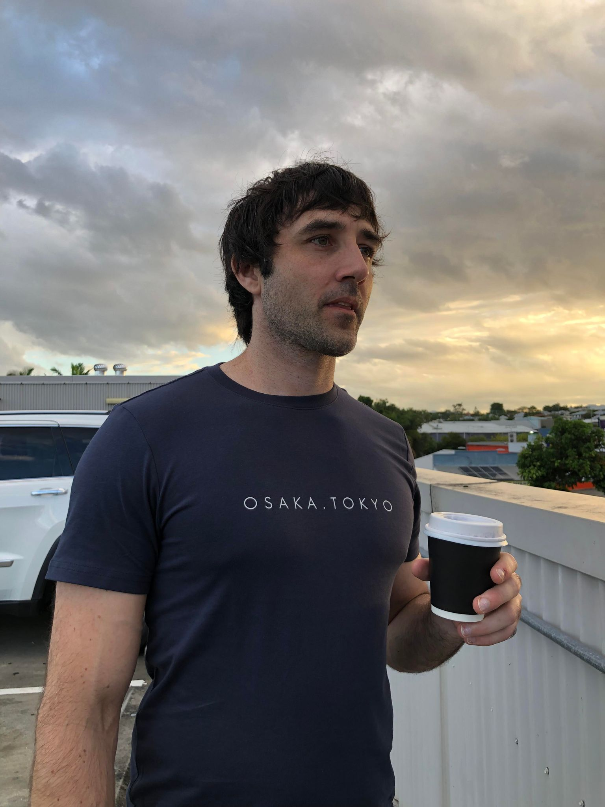
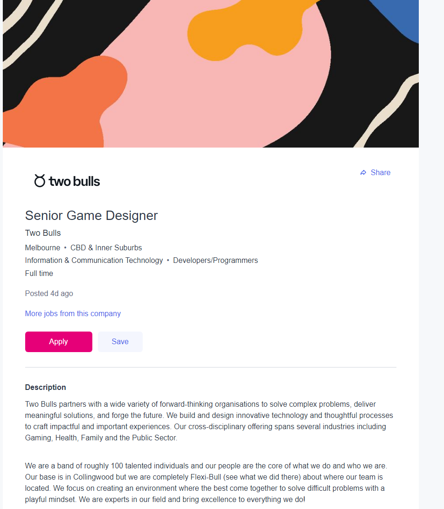

Personal profile
Personal Information
Hi my name is Benjamin duke I was born and raised in country Victoria, in my younger years my parents worked on sheep Farms, and around age 9-14 my dad got various jobs managing pig farms. Furthermore, this led to me being home Schooled from grade 5 till re-entering school halfway through year 10 this led to me not completing year 10 and moving straight into work as a retail assistant where I completed 10 years in various roles. A hobby I have to this day which began at an early age was gym and health and fitness this led to my next detour in life, I got my cert 3 and 4 in personal training and became a CrossFit powerlifting coach/pt, this led me working for a CrossFit gym which I eventually manage for a further 3 years. However, that business ended up being sold so I decided to change the direction in life again and head back into retail and begin the journey of getting into university. This journey began by completing approximately 2 years of steps which then began with me swapping and changing degrees over the next few years. However, I have finally landed a degree I am ready to sink my teeth into here at RMIT. A fun fact about me is I also like to mountain bike and to be more specific downhill mountain biking. I have also been sky diving and I like to think I'm a bit of a thrill-seeker.
Interest In IT
My Interest in IT
My interest in it did not begin until later in life due to not having my first pc till around the age of 12, my interest was first peaked around the age of 18 when my soon-to-be best mate decided to undertake an IT degree with CQU university up that point I had never considered university or further study to be an option. However, it was still approximately another decade before I would decide to make the jump into further study and by this time my best mate had begun what is now a successful career with the department of defense as a network engineer along the way he developed a great group of friends with a passionate interest in IT which along the way have also become my friends. furthermore, if that was not already enough to push in the direction of It my current girlfriend and soon-to-be wife's finger crossed, also has a passion for game development and has recently completed a diploma in game development and is now embarking on a journey to complete a degree in It. With all this passion and interest in IT all around me, it was only a matter of time before my interest was a sparked to the point where I would enroll in this current degree with RMIT.Why I chose To Study At RMIT
I chose RMIT because all reviews showed me I was selecting a global university known for its leadership and innovation in technology, design, and business. However, this was not the only reason it was complimented by flexible study options being online or on campus, and being a distance education student this was really appealing to me, the added bonus of knowing I will be taught by experts in my chosen field of study who also so have strong industry connections and a curriculum that is influenced by current industry trends was the icing on the cake. Furthermore, the enrollment process was made super easy by enrolling through an open university their helpful staff guided me seamlessly through the enrolment process. Things I expect from my studies are as follows a wealth of knowledge about multi-disciplines such as programming and network development and also IT as a whole. I also look forward to having a chance to further specialize in an area that piques my interest. I also understand that RMIT is a world-class university that adapts its degrees to stay on top of current industry trends this will help me to gain a substantial amount of practical skills that will help me add value to a company in the future, therefore, helping to make me job-ready. Last but not least I hope that the university experience as a whole teaches me more about myself as a person and what I'm capable of by providing me with amazing role models to learn from.
Senior Game Designer
What Makes This Appealing To Me
The reason senior game developer is something I would like to work towards as a long-term goal is I have always had a passion and interest in games across multiple genres and platforms in particular MMOs world of warcraft, Rift Gw2 and Rappelz just to name a few. To be a senior game designer I would be responsible for designing game mechanics, characters, rules, story, gameplay, interfaces, and modes in great detail, I would also cooperate with the Design team to plan and implement game design ideas, as well I would need to deal with internal stakeholders for design approval. In this role being creative and imaginative is a must and it would allow me to bring my flair to the table while meeting project deadlines. The aspect of team management and development is also a major priority of a senior game developer.
Skills, Qualifications and Experience Required For Position
Before applying for this role I would need at least 5 years of experience working in the game industry in roles such as Game designer, game artist, game programmer, sound engineer, and level designer just to name a few this would help me develop skills and working knowledge of VR output and unreal engine. I would also need to specialize in at least one area of design skills while having a well-rounded foundation. Furthermore, being proficient in analytical thinking and problem solving and being able to iterate on live features based on player feedback and telemetry data. culminating in me having a deeper understanding of games across multiple genres and platforms. However, it can not be overlooked I would need to develop my leadership skills and communication skills to lead a successful team of developers.
Skills, Qualifications and Experience I Currently Have
The experience I currently have in IT is very limited unless playing games and talking to my mates about it and doing uni assignments counts. Although my tech skills are very limited I do however possess many crossover skills from multiple team leadership roles in my other careers, For example, I have a strong skill set in conflict resolution team motivation, and overall time management of large group-oriented tasks this experients is due to the multiple management roles I have held over the years.
Plan On How I Will Obtain Skills, Qualifications and Experience
My plan to become a senior game developer is to obtain my bachelor's degree in IT and then further my study into advanced math with a focus on physics while also looking at ways to become more creative, while also gaining an entry-level position in-game development. Along the way, I will develop a portfolio to showcase my current projects and expand on my software engineering skills. All things considered and with a little bit of luck and determination, it should be achievable within 10 years.
Results of MBTI, Learning Style, and Big 5 Personality Test

What Do These Results Mean To Me
What do the test results mean to me well I take them as a guideline? There are multiple factors to consider. For example, what mood I was in when I took the test, had I taken the test before, and was I trying to skew the results ETC... I find it best to reflect on the test results and think of real-life examples and situations and see if the test results match how I reacted when I encountered input Examples could be conflict at work Etc.
How Do I Think These Results Affect Me In A Team
In a team environment after looking at a broad overview of all my test results, I think I would be suited to lead a team but also sit back and ask lots of questions as it shows I have no problems with being assertive or disagreeing with the group. However, I feel I could bring a group together with My playful sense of humor. which would increase the group's ability to mesh and be comfortable. However, this means I could get sidetracked from the task at hand. Overall I think my personality is well suited to group work.
How Do I Take This Into Account Whatn Forming A Team
When forming a team I would need to make sure I choose team members who have a similar assertiveness as myself or I would run the risk of steamrolling the group which may not lead to the best result. I would also need to make sure to choose someone who likes schedules and structure to keep us on track and to cover my weakness of liking a little too much joking around. I also feel people who lean toward being more extroverted work best with me due to my energetic outburst not really making them feel that uncomfortable.
Iphone application
Overview
The project will be a workout application for the Apple Iphone. It will have many of the standard features such as basic intermediate and advanced programs with also the ability to select from a large database of exercises to customize your own weightlifting or cardio workout programs while also tracking the workouts. Sleep and dietary habits are also major factors when trying to maximize results in the gym so the application will also allow you to track sleeping patterns along with caloric intake The twist that will be implemented with this application is the introduction of an avatar, the avatar will reflect your workout, sleep, and dietary patterns and will be fully customizable.
Motivation
The motivation behind creating this application is that between 39 and 40 percent of men and women are overweight or obese, this is due to multiple factors. For example an increased consumption of energy-dense foods containing high amounts of sugar and bad fats. Furthermore, a decrease in physical activities has occurred due to the increasingly sedentary nature of many forms of work. Added motivation comes from studies showing that over 65 percent of the population are visual learners This is where the avatar comes in it will provide a visual representation of the efforts of the user. The aim of the applications is to provide a user-friendly experience that appeals to a broad audience, not just those that are already self-motivated individuals.
Description
Application name (insert) After downloading the application you will be prompted to create an account after this process is complete you will be prompted to enter your current height and weight and also answer a few questions to gauge your current fitness level. To begin with, you can choose from beginner-intermediate, or advanced workouts depending on your goals there will be preset programs already loaded into the app. however, there will be an option to create a custom workout maybe you are an athlete with specific goals. To go along with the calorie tracker there will be basic meal plans offered to help you hit your caloric goals this feature will also be highly customizable allowing you to set up your very own meal plan and track it. The next stage is where the fun begins this is when you will create your personal avatar you will be able to select from a large selection of preset avatars or you will be able to fully customize an avatar to your liking. The reason for the avatar is simple it is going to be a visual representation of your training, sleep, and dietary habits. For example, maybe you do eight workouts in a two-week period and they are all chest workouts this is an exaggeration of course. However, if this were the case your avatar would visually show out-of-proportion chest muscles Think of popeye and his arms. Maybe you have eaten more than your set caloric intake nine days out of a two-week period, the avatar will have an enlarged stomach. Furthermore, you may have only been sleeping an average of five hours a night, in this case, the avatar will look visually tired and may have black circles around the eyes. The aim of the application is to make small changes to the avatar on a workout-to-workout basis so that unless you go to an extreme in any particular area you will not notice ridiculous changes. However, as you progress through your selected exercises for the day your avatar will glow to show you the muscle group that the exercise is targeting giving a really solid visual representation of the muscle groups at work. This is not all the avatar will also perform the exercise at the same time as you while giving helpful hints on how to perform the exercise safely and for maximizing effectiveness.
Describe Software, Hardware, And/Or Other Equipment Needed
Firstly to create an app for the apple Iphone it will require an apple developer account an apple mac computer would be required to use the IDE Xcode to effectively build and debug the app. Xcode comes with the apple development tool kit and it contains: SDKs, a code editor, compile/build tools, simulators, and a debugger. It will use a native iOS SDK. The language used will be Swift it has quickly become the default language due to it being the easier, simpler, and more compact language in comparison to Objective -C.
Describe Skills Needed and How Feasible It Is To Obtain Necessary Software and Hardware Required
The skills required to produce a mobile application are as follows. Writing clean maintainable code that is suitable for continuous integration and deployment, being well versed in best practices and mobile application guidelines also software development experience, and deep knowledge of Apple's iOS and developers toolkit. Moreover, it will require experience maintaining and publishing applications to the app store. The skills required to pull off this project although not that hard to find would be looking to find a team of people with a range of three to five years of experience in software development to complete it in a reasonable time frame. However, if the project is successful it will fill a spot in the market and hopefully engage a broader audience of visual learners to embark on a health and fitness journey.
Reference list
Test, M.P. (2022). 100% Free Personality Test - BIG 5 Test. [online] My Personality Test. Available at: https://my-personality-test.com/results/4649799454323818044/big-5 [Accessed 19 Jun. 2022].
www.educationplanner.org. (n.d.). What’s Your Learning Style? 20 Questions. [online] Available at: http://www.educationplanner.org/students/self-assessments/learning-styles-quiz.shtml?event=results&A=7&V=3&T=10 [Accessed 19 Jun. 2022].
NERIS Analytics Limited (2013). ENTP Personality (‘The Debater’). [online] 16Personalities. Available at: https://www.16personalities.com/entp-personality.
World Health Organization (2021). Obesity and Overweight. [online] World Health Organisation. Available at: https://www.who.int/news-room/fact-sheets/detail/obesity-and-overweight.
World Health Organization (2021). Obesity and Overweight. [online] World Health Organisation. Available at: https://www.who.int/news-room/fact-sheets/detail/obesity-and-overweight.
developer.ibm.com. (n.d.). IBM Developer. [online] Available at: https://developer.ibm.com/technologies/mobile/?utm_content=SRCWW&p1=Search&p4=43700068081544231&p5=p&gclid=CjwKCAjw77WVBhBuEiwAJ-YoJPrcpwVQMUEazuTMbLk2w0J05gK9eQclz3rB4ZLGxH1XZQhXswGiExoCsbwQAvD_BwE&gclsrc=aw.ds [Accessed 19 Jun. 2022].
index.html 2 KB